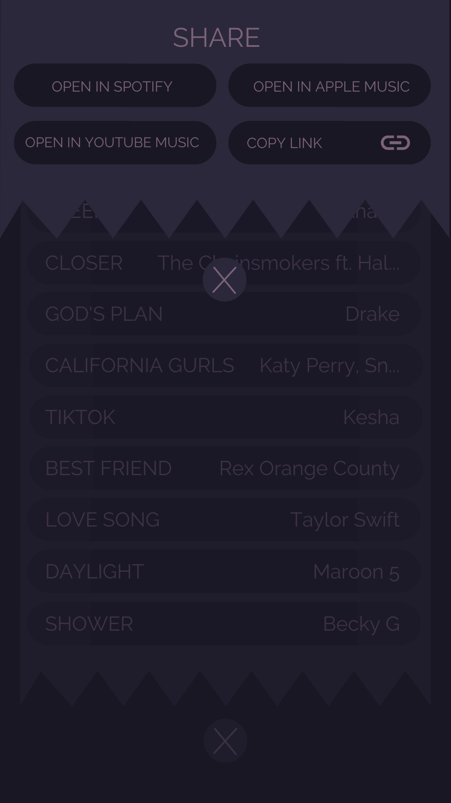

CLEF Song Identidication Page

CLEF Opened Playlist

CLEF Sharing Page
HowdyHack CLEF (Music Platform Bridge)
This project was for HowdyHack 2021. Our goal was to develop an app that serves as a bridge between
all the most popular music streaming apps. The main purpose is to be able to create playlists in
CLEF and to be able to upload them into other music streaming apps so that you can share your music
with anyone, not just people who use the same streaming app as you. Additional functions include
song recognition and generating playlists based on one song.
PowerApps Physical Security Form
This project was for my internship at Pioneer Natural Resources located in Irving, TX. The purpose was
to create a mobile and desktop friendly application that the security guards in our building could
log any suspicious activity, check out temporary badges, view activity trends, and to look at the
inventory of temporary badges. All data is then stored into a SQL Table in SQL Server Management Studio.
Some other features of this app include GIS tracking component and a PowerBI Dashboard.
Sharepoint Internal Department Webpage
This project was for my internship at Pioneer Natural Resources located in Irving, TX. The goal of this
project was to redesign the Information Technology Department's internal webpage. The current page was
very outdated and the department agreed that it was time for a new one that looked more minimalistic and
modern. I designed the webpage on Canva and then embeded the html into Sharepoint where I then touched up
any remaining mistakes that didn't embed correctly.
- CSCE 313 LE1 Project
- CSCE 313 PA0 Project
- CSCE 315 SQL POS Group Project
CLEF Song Identidication Page
CLEF Opened Playlist
CLEF Sharing Page